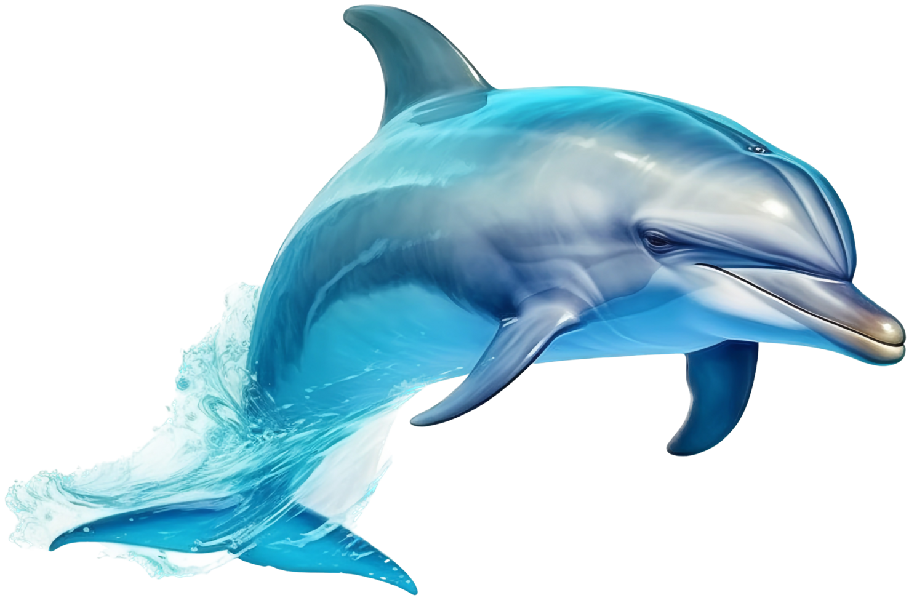

Delfin
Delfin (Delphinidae)

Hábitat:completamente acuatico.
Estilo de vida:son carnivoros y varia según su especie y habitad.
Características:
- Viven en aguas costeras y mares abiertos.
- presentan una piel suave.
- Poseen un cuerpo hidrodinámico diseñado para nadar grandes velocidades.
- Sus aletas determinan en buena parte su movilidad.
- Poseen ecolocación .
Volver a la pagina principal
pagina principal